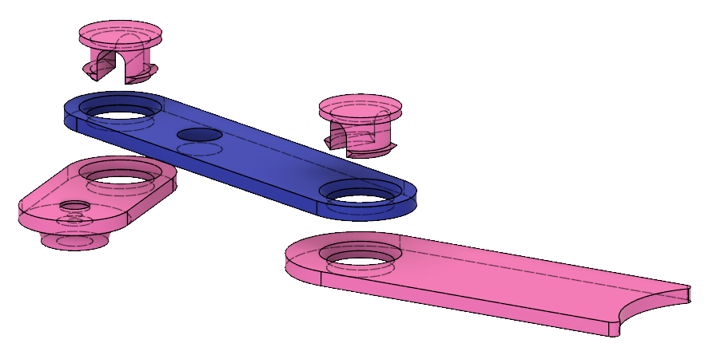
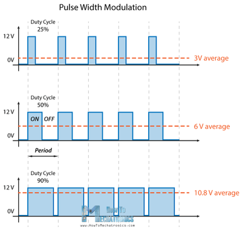
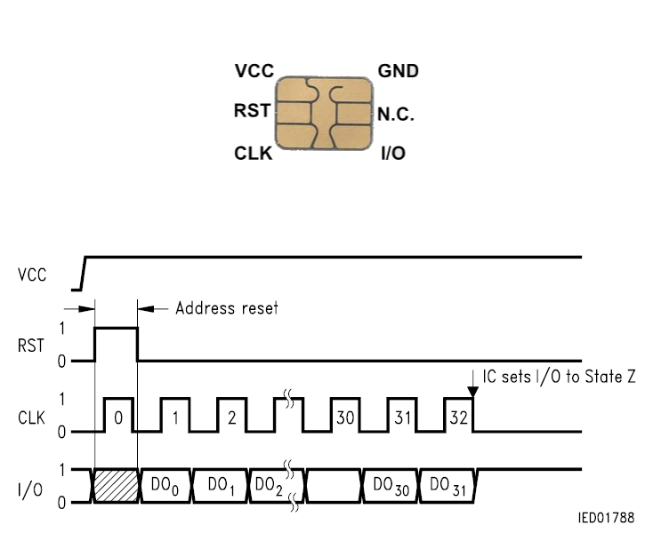
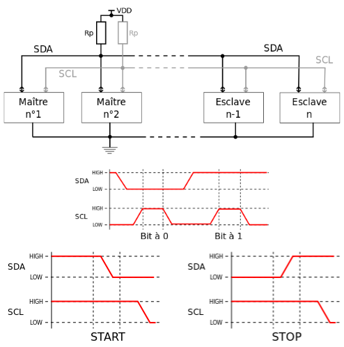
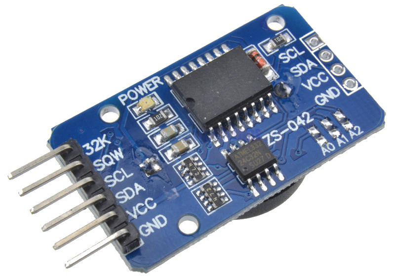
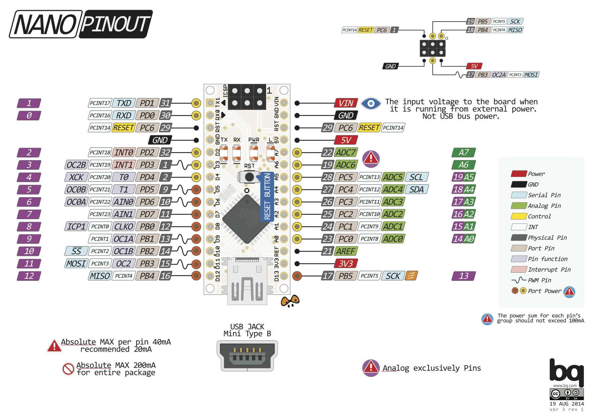

Richard Fagot


#include <Servo.h> Servo myServo; byte position; byte servoPin; void setup() { myServo.attach(servoPin); myServo.write(position); delay(1000); myServo.detach(); } void loop() {...}
struct { char name[20+1]; int pocketMoney; int secret; byte nameLength; };


#include <LiquidCrystal_PCF8574.h> // by Mathias Hertel LiquidCrystal_PCF8574 lcd = LiquidCrystal_PCF8574(0x27); lcd.setCursor(col, row); lcd.print(message);

#include <ds3231.h> //ds3231FS by Petre Rodan ts timeDetails; DS3231_get(&timeDetails); timeDetails.wday;
 :::notes :::